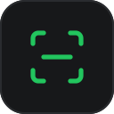

ProofPipe
Sync now
Captures
Texts from phone
Loading…
Set
Hide p button everywhere
Show p button on this site
Click a capture to copy it, then Ctrl+V into any chat. For drag-and-drop use the
p
button on the page — drag it to move it, right-click it to hide it on that site. Selected text anywhere → right-click → "Send to phone via ProofPipe".